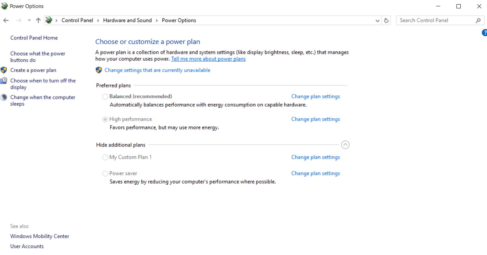
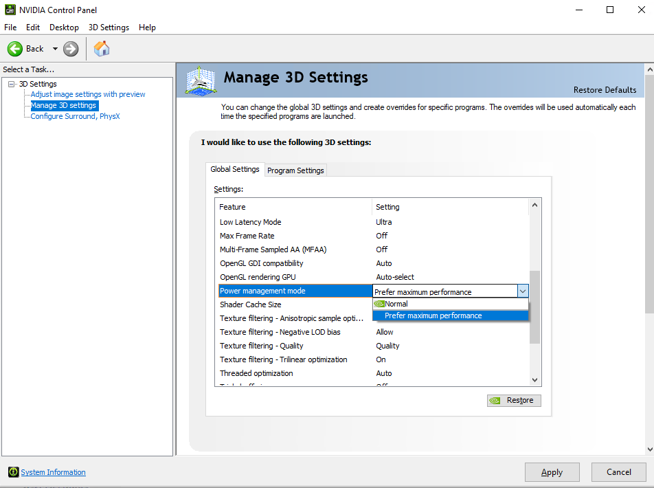
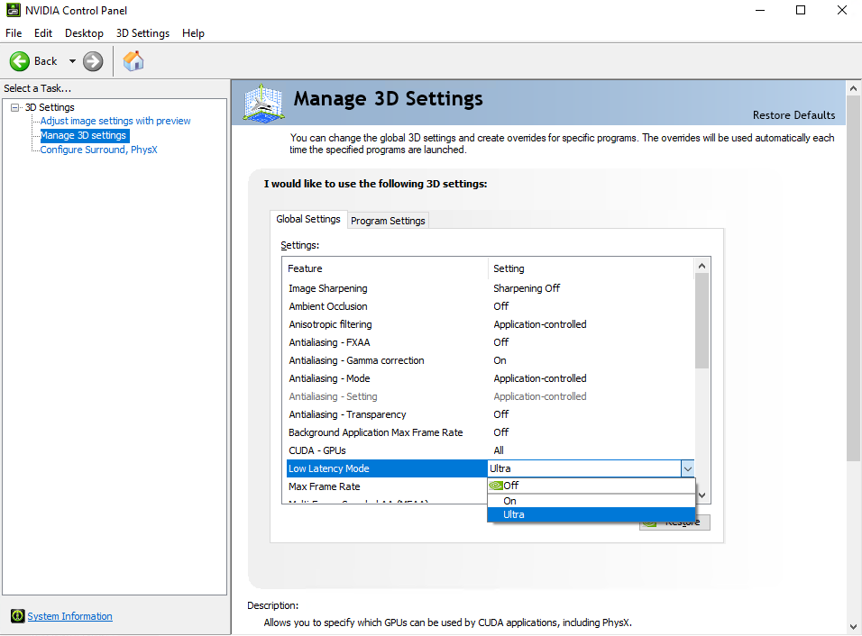
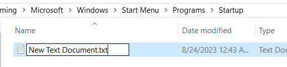
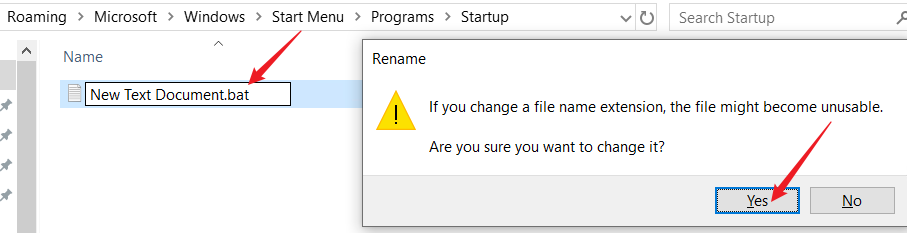
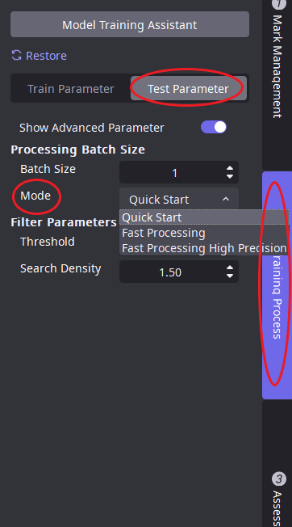
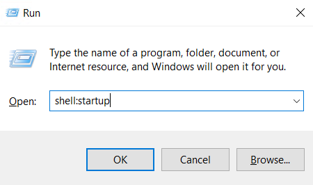
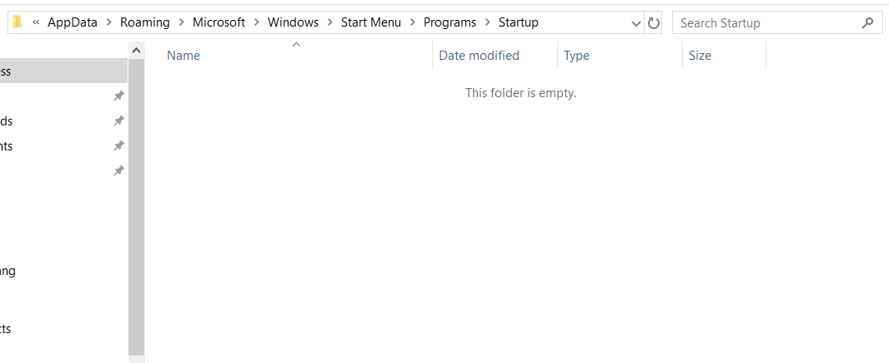
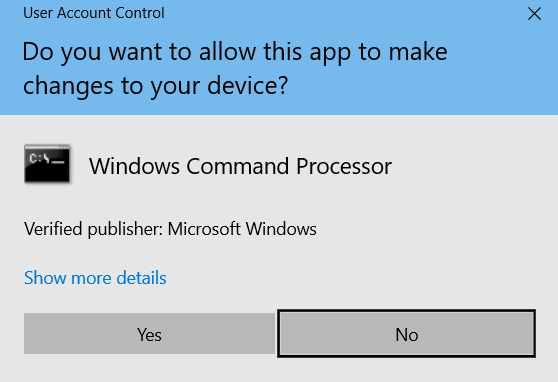

最優效能指南
AIDI 實際的運行速度與 Nvidia GPU 的驅動設定、部署環境（硬體所在的環境）、軟體設定息息相關，對此給出以下建議：
1、注意散熱 ；Nvidia 驅動為了保護顯卡，設定溫度牆 85 度。如果顯卡溫度高於 85 度，Nvidia 會自動降低運算效能，導致推理速度變慢 ；例如 AIDI 智能相機沒有主動散熱功能，需要用戶新增外部散熱的組件，否則推理速度在運行一段時間後，會變慢；例如 部署環境是比較密閉環境，由於散熱問題，推理速度也會變慢
2、系統電源設定 （詳情見下）；需要開啟高性能模式，不然推理速度波動較大
3、Nvidia 驅動設定 （詳情見下）; 此設定有利於减少速度波動，提高推理速度
4、推理批次大小影響推理速度; 極速推理批次越大，模型主體推理速度 (GPU 函數處理部分) 越快，但是 AIDI 的前向圖像處理後向處理，都是在 CPU 上而且 AIDI 沒有考慮到前向或者後向處理多批次大小並行，所以批次大小增大，在絕大部分情况下 ，速度提升並不明顯。
5、在實際部署場景中或者測試速度時，使用極速推理模式；極速推理模式一般比快速啟動快一倍以上（定位模組除外）
系統電源設定
電源設定為 高性能模式

Nvidia 驅動設定
GPU 電源模式

低時延模式
Nvidia 控制台->低延時模式-> 超高

鎖定顯卡頻率
注意此設定關機後重置，每次開機都需要設定
設置方法1：
方法1、安裝目錄下蒐索 gpu_set_gpu_mem_clock.bat，以管理員許可權運行
設置方法2：
方法2、如果沒有找到，可以通過以下步驟，生成設定腳本
① 新建 txt文件，將以下程式碼複製到新建的 txt 檔案中

② 將 txt 附檔名改成 bat

③ 以管理員許可權運行
如果為了簡化操作，可以在 windows 下設定開機自動執行（如何設定開機自動執行，看附錄 ）
@echo off
%1 mshta vbscript:CreateObject("Shell.Application").ShellExecute("cmd.exe","/c %~s0 ::","","runas",1)(window.close)&&exit
Set SuccessFindMaxClock=0
FOR /F "tokens=1,3" %%i IN ('nvidia-smi -q -d SUPPORTED_CLOCKS') DO (
if "%%i" == "Memory" (
echo %%i %%j
Set ClockValue=%%j
Set SuccessFindMaxClock=1
GOTO SetClock
)
)
:SetClock
echo SuccessFindMaxClock %SuccessFindMaxClock%
IF %SuccessFindMaxClock%==1 (
echo "nvidia-smi -lgc %ClockValue%,%ClockValue%"
nvidia-smi -lgc %ClockValue%,%ClockValue%
nvidia-smi -lmc %ClockValue%,%ClockValue%
) else (
echo "Failed to find max clock."
)
pause
開啟計算模式
如果 GPU 顯卡是 Quadro 或者 Tesla 系列顯卡，可以開啟計算模式，來發揮 顯卡的最大效能 如果是 GeForce 顯卡無須對此進行設定
nvidia-smi -dm 1
速度測試建議
Nvidia 顯卡由於電流和溫度影響，所以 一個 client 前幾十張圖速度波動加大，建議二次開發測試速度時，可以跳過前 100 張圖。
極速推理模式
可以通過 AIDI 打開專案，然後 測試參數-> 顯示高級參數->推理模式->極速推理

附錄
Windows 腳本開機自啟
1、 win + R 輸入 shell:startup，然後Enter

2、將腳本複製在上一步出現的文件下

3、每次開機都會有彈窗，點擊確認
